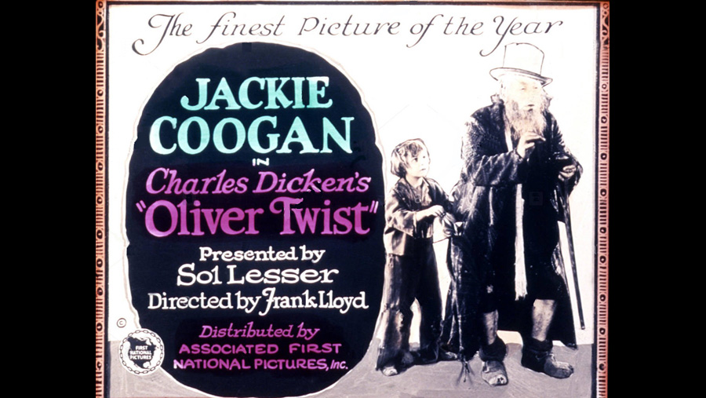

| Character | Actor |
|---|---|
| Oliver Twist | Jackie Coogan |
| Fagin | Lon Chaney |
| Bill Sikes | George Siegmann |
| Nancy | Gladys Brockwell |
| Mr. Brownlow | Lionel Belmore |
| Mr. Bumble | James A. Marcus |
| Widow Corney | Aggie Herring |
| Jack Dawkins, "The Artful Dodger" | Edouard Trebaol |
| Monks | Carl Stockdale |
| Noah Claypole | Lewis Sargent |
| Charlotte | Joan Standing |
| Mrs. Bedwin | Florence Hale |
| Mr. Grimwig | Joseph Hazelton |
| Mr. Sowerberry, undertaker | Nelson McDowell |
| Charlie Bates | Taylor Graves |
| Mrs. Maylie | Gertrude Claire |
| Rose Maylie | Esther Ralston |
| Toby Crackit | Eddie Boland |
| Role | Person |
|---|---|
| Director | Frank Lloyd |
| Screenplay | Walter Anthony (titles) |
The film was considered lost, until a print surfaced in Yugoslavia in the 1970s. The print lacked intertitles, which were subsequently restored by Blackhawk Films with the help of Jackie Coogan and Sol Lesser.
Coogan was at the height of his career during the filming, having played the title role in Charles Chaplin's The Kid the previous year.